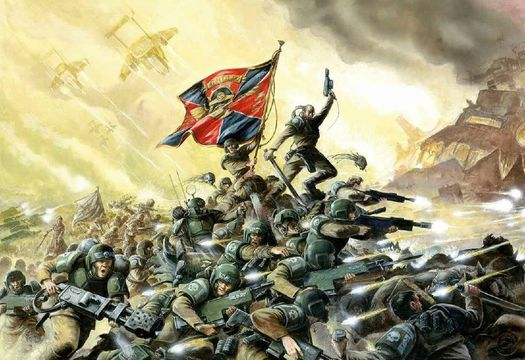

My name is CoIin Quirk I grew up in Orland Park where I went to Carl Sandburg High School. I was a part of the robotics Club and chess club the most my high school years. When I finish school I moved to Chicago with my dad and started work at Michaels as an associate for the last year-and-a-half. Then I found general assembly and it peaked my interest because I was hoping to learn how to develop a front-end website.I started the program in February and ended in April. Since then I've been looking into other programs and colleges.
Experience
I have experience in the following fields house wiring, robotics, Electronics, computer maintenance, basic coding and merchandising. I did house wiring for one year and did electronics for two years in high school. I was in the robotics club for 4 years. I currently work at Michaels where I have worked for the last 2 years as a replenishment associate. Wall in electronics and Robotics I learned how to build robots and circuit boards.
Thing i did win i was growing up
My hobbies have been Warhammer 40k and soccer for most of my life. Warhammer 40,000 is a science fantasy tabletop war game set in approximately the year 40,000 AD. Where you battle armies to control the fate of the Galaxy.I play the Space Marines which are genetically altered super soldiers who live and die for the emperor. I played soccer for at least 10 years of my life.I primarily play defense and forward. I also used to play baseball for three years. I also used to like listening to the radio a lot.

Thing I do in my free time
Things I like to do in my free time I play video games and listen to music. I play Grand strategy on a real-time basis.which are Hearts of Iron, Victoria, Crusader Kings and eu 4. All of these games are made by Paradox Studios. I also play Men of War Assault Squad. Bands that I like to listen to Eminem, Fall Out Boy, Three Days Grace, Cage the Elephant and many more.